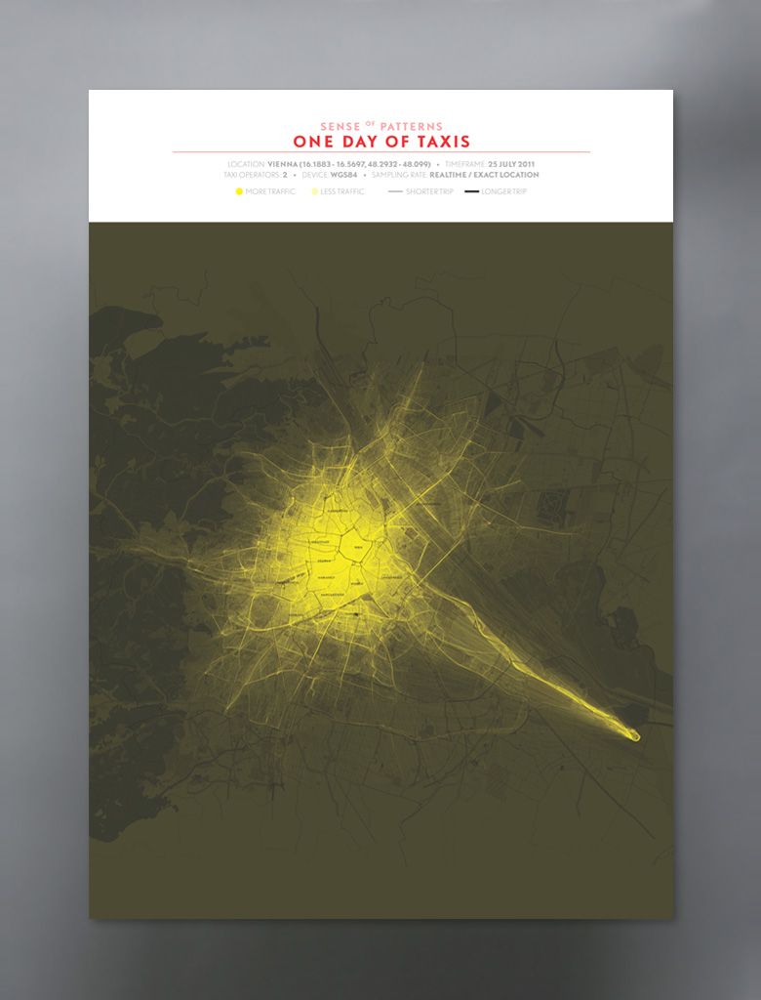
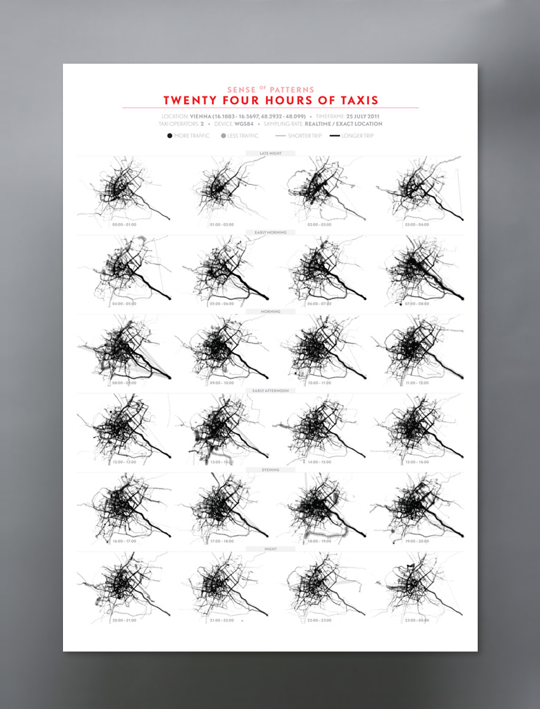
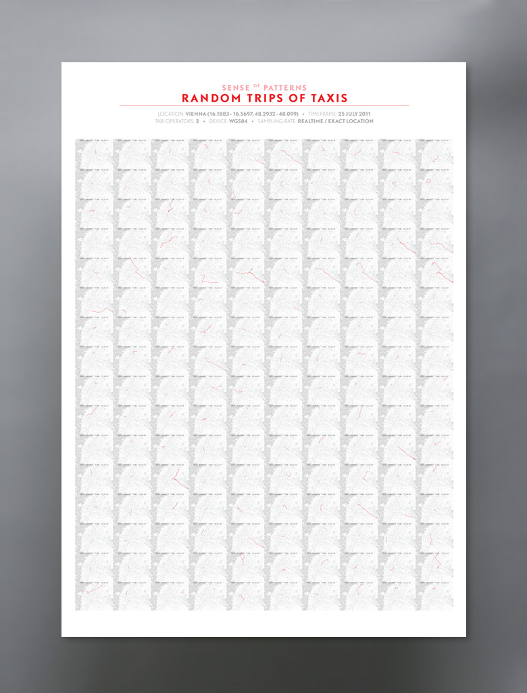
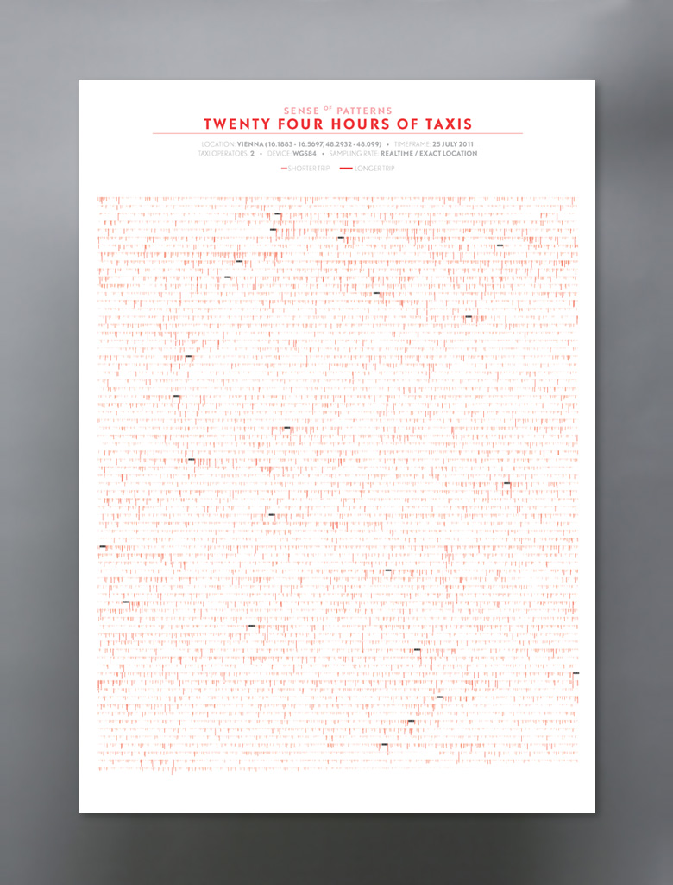
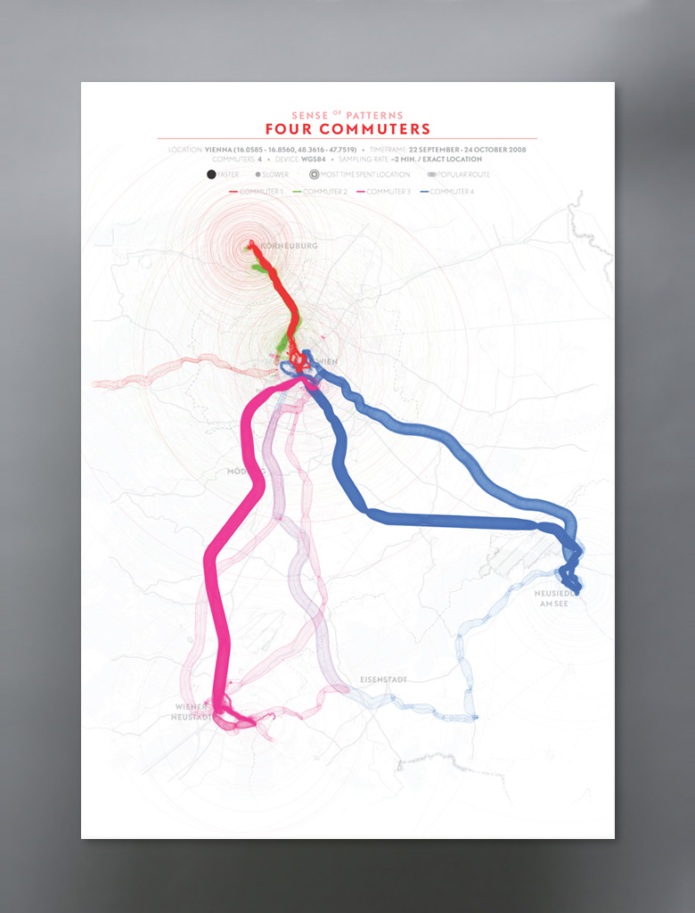
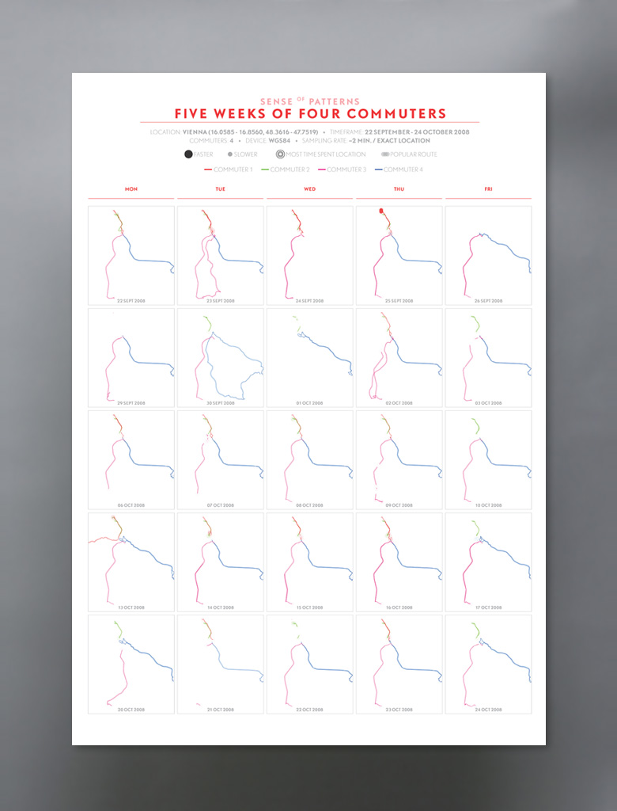

Sense of Patterns is an on-going project, a series of printed data visualizations aiming to depict the behaviors of masses in different public spaces. The visualizations have a focus on the patterns of moving entities in public like commuters, cars and public transportation vehicles as well as the interaction between these entities and physical structures like roads, sidewalks, buildings and parks. The project intends to provide strong visuals on what we all experience in our daily lives in different cities.
The first edition of the project consists of six A1 size prints and a video animation based on the data related to Vienna and its suburbs. Two different datasets provided by AIT: Austrian Institute of Technology sorted with python and visualized by using processing. The first dataset includes taxi trips during the 25th of July, 2011. It has 915.353 single entries (Unique id of the trip, timestamps, longitude and latitude coordinates in WGS84). Second dataset includes coordinates of the locations of four commuters in Vienna region for five weeks. It has 520.331 single entries (Unique id of commuters, timestamps, longitude and latitude coordinates in WGS84).
Data sorting, python and processing codes, print layout and designs realized by Mahir M. Yavuz (mahir.yavuz [at] ufg.ac.at).
Datasets provided by AIT. Project is generously supported by AFO and AIT. Many thanks to Dietmar Offenhuber, Katja Schechtner, Markus Ray, AIT Austrian Institute of Technology, AFO Architekturforum Oberösterreich, Ars Electronica Festival and MIT Senseable City Lab.
Special thanks to visualization community and processing folks!
9/2011 — Sensing Place / Placing Sense, AFO, Linz [»»]
9/2011 — Mit dem Taxi vom Datenberg in die Stadt [»»]
10/2011 — Featured on Visual Complexity [»»]
10/2011 — Q&A Session on Visualizing.org [»»]






The posters were published on visualizing.org, which has since shut down. Archived copies: